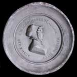
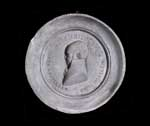

‘Ô bloem der steden’. Bilderdijk en Leiden
Samenstelling: Rick Honings en André Bouwman
De volgende onderwerpen komen aan bod:
2. Bilderdijk en de liefde
Toen
Bilderdijk zich na zijn studententijd in Den Haag vestigde, kwam
hij in contact met Catharina Rebecca Woesthoven. Hij werd
verliefd op de eenentwintigjarige schone, en stuurde haar vele
van wellust sidderende liefdesbrieven. Op 21 mei 1785 trouwden
ze, om de eer van de zwangere bruid te redden. Het koppige
karakter van Catharina ging echter moeilijk samen met dat van de
wispelturige dichter. Dit leidde tot talloze conflicten.
Bovendien kon Bilderdijk volstrekt niet met geld omgaan. Zijn
verbanning in 1795 verloste hem daarom niet alleen van een
slecht huwelijk, maar tevens van zijn schuldeisers. In Londen
kwam hij in contact met de Haagse familie Schweickhardt. Met de
negentienjarige dochter Katharina Wilhelmina kreeg hij een
relatie. Toen de dichter naar Brunswijk vertrok, volgde
Wilhelmina hem spoedig. Van samenleven kon echter geen sprake
zijn. Dat gebeurde pas in 1802, nadat hij van zijn eerste vrouw
was gescheiden. Katharina Wilhelmina vormde het licht in
Bilderdijks verduisterd leven. Toen zij op 16 april 1830 stierf,
was hij ontroostbaar.
|
2.1. Foto van een door C.H. Hodges geschilderde portret van
C.R. Bilderdijk-Woesthoven. [z.j.]. [PLANOL 2 A 1: 25/80]. –– Dit portret van Bilderdijks eerste vrouw dateert van omstreeks 1793. Da Costa schreef over haar: ‘Levendig staat mij haar gelaat en gestalte voor ogen, waarin de kentekenen van indrukmakende meer dan innemende schoonheid nog zo goed te herkennen waren.’ |
|
 |
|
2.2. W. Bilderdijk, Portret van Catharina Rebecca Woesthoven. Pentekening. [z.j.]. [PLANOL 2 A 1: 25/39]. –– Dit silhouet tekende Bilderdijk zelf. Eronder citeerde hij Ovidius: ‘Zij bestond het de echtgenote van een balling te blijven’. De gravure van dit portret kon Bilderdijk niet waarderen. ‘Gij zijt er verschriklijk in mishandeld,’ schreef hij aan zijn vrouw. |
|
 |
|
|
2.3. L. Schweickhardt (?), Portretten van W. Bilderdijk en K.W. Schweickhardt. Gipsen medaillons, ca. 1861. [AMNL suppl.]. –– Deze medaillons werden op initiatief van J.J.F. Wap uitgegeven. In 1876 werden ze door hem geschonken aan de Maatschappij der Nederlandse Letterkunde. De vermoedelijke maker is de broer van Katharina Wilhelmina, Leonard Schweickhardt. |
|
|  |  |
|
2.4. P. Velijn, Portret van K.W. Schweickhardt. Naar H.W. Caspari. Staalgravure, [z.j.]. [PLANOL 2 A 1: 25/79]. –– Katharina Wilhelmina was getalenteerd; ze schreef o.m. Gedichten voor kinderen (1813). Maar haar gezondheid was zwak en ze leed onder de dood van meerdere kinderen. Ook had ze veel te verduren van haar grillige man, die ze overigens onvoorwaardelijk steunde. |
|
 |
|
|
2.5. W. Bilderdijk, ‘Het echtgeluk’ (1799). Manuscript. [LTK 1821]. –– In dit gedicht maakt Bilderdijk zijn eisen aan Katharina Wilhelmina duidelijk. Hij verlangt onder meer van haar dat ze de grillen van haar eega verdraagt, en dat ze haar eigen wil ondergeschikt maakt aan de zijne. |
|
 |
|
| vorige pagina | volgende pagina |